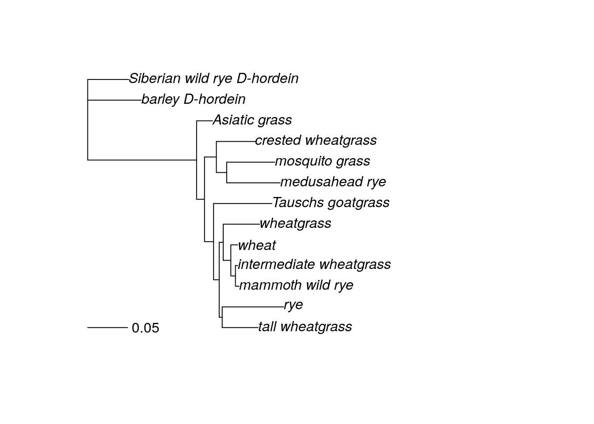
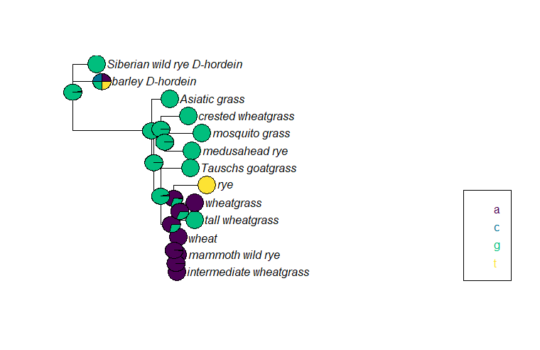
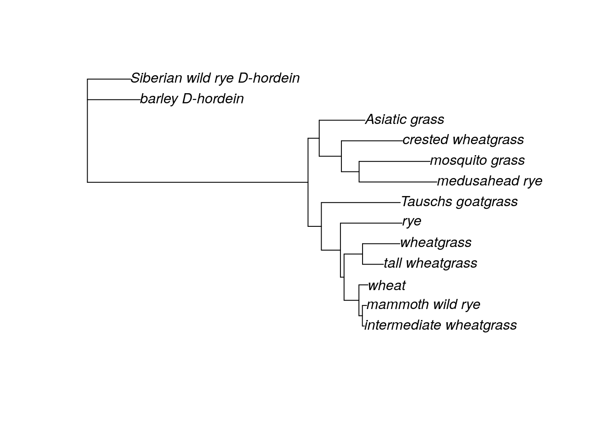
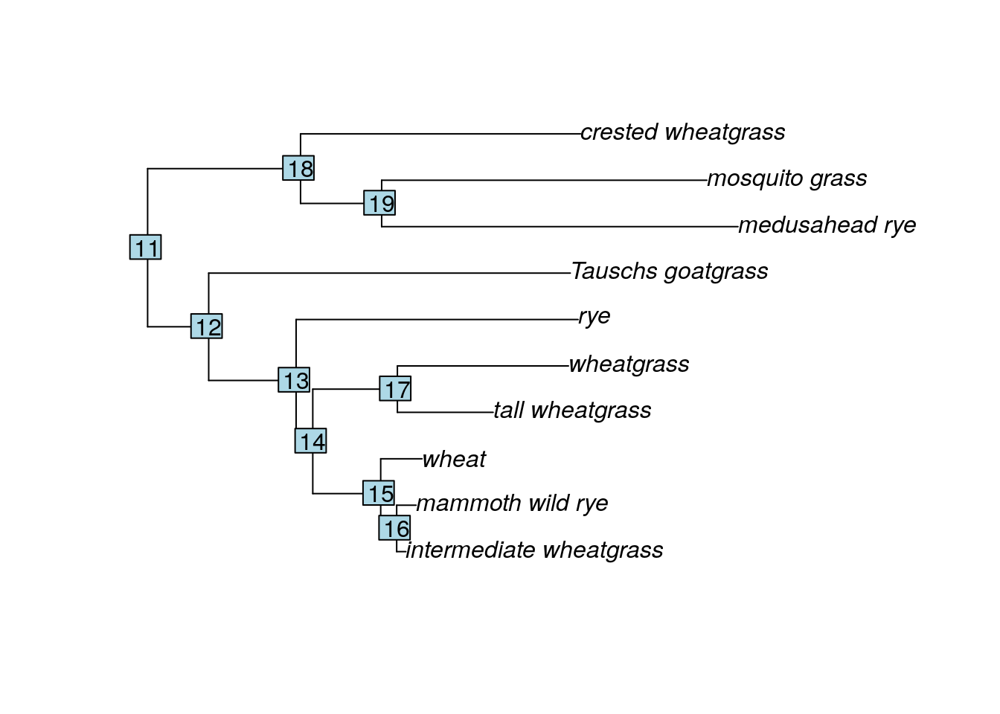

Chapter 23 Ancestral state reconstruction
For some studies, building a phylogenetic tree is just the beginning. The researchers are more interested in using their phylogenetic tree to test other hypotheses about evolution. One of the most common of these is ancestral state reconstruction, or identifying the state of a trait in a common ancestor of a clade. Researchers might be interested in the ancestral nucleotide at a particular part of as sequence (especially a coding sequence), or they might be curious about the ancestral phenotype or behavior.
Ancestral state reconstruction analyses can be done using tools in the phangorn and phytools libraries in R.
23.1 Reconstructing ancestral sequences
Let’s start by reconstructing putative ancestral sequences at the nodes within our grass tree. We will use both the phangorn and phylotools packages. We need both the fasta file and an ML tree. I’ve chosen to recreate the ML tree instead of loading my saved tree directly becausee R has reformatted the taxa names slightly in the grass tree. If this has not happened to you, you can load your ML tree directly using the read.tree command instead of rerunning the analysis.
#install.packages('phytools')
library(phangorn)
library(phylotools)
grass.align <- read.phyDat("grass_aligned-renamed.fasta", format = "fasta")
dist <- dist.ml(grass.align)
nj.tree <- nj(dist)
fit <- pml(nj.tree, data = grass.align)
fitGTR.G <- update(fit, model = "GTR", k = 4)
fitGTR.G <- optim.pml(fitGTR.G, model = "GTR", optGamma = T, rearrangement = "stochastic", control = pml.control(trace = 0))
fitGTR.G$tree <- root(fit$tree, outgroup = c('barley_D-hordein','Siberian wild rye_D-hordein'))
plot(fitGTR.G)
After we look at the grass tree to make sure it is rooted the way we want, we use the ancestral.pml command to estimate the ancestral sequence for each node. ancestral.pml can run either an ML or Bayesian analysis. This command takes two arguments: the full output of your ML analysis and a choice of either “ml” or “bayes”. We will use ML, but you could just as easily use the Bayesian method.
After running the ancestral state reconstruction, we plot the nucleotide at base 209 for each node and tip. (I randomly chose base 209. In practice, researchers likely would have already identified locations of interest.)
anc.ml <- ancestral.pml(fitGTR.G, "ml")
plotAnc(fitGTR.G$tree, anc.ml, 209)
At base 209, most of the samples and putative most recent common ancestors have a G, although at some point a mutation occurred in the ancestors of the rye/wheatgrass/tall wheatgrass/wheat/mammoth wild rye/intermediate wheatgrass clade, which is why those taxa mostly have an A at base 209. (Rye is clearly the weirdo with a T.) The pie chart for the barley D-hordein sequence shows all four possible bases, which just means this particular base is likely missing in the barley D-hordein sequence (either because it was not sequenced or because there was a deletion event and the base does not exist).
Additionally, the pie charts for some ancestral nodes have multiple colors. When estimating ancestral sequences, ancestral.pml is calculating the likelihood of each possible nucleotide. At the nodes with pies containing both green and purple wedges, either an A or a G is possible in the ancestral sequence. The bigger wedge indicates the nucleotide with the greatest likelihood.
We could do this for any base, like base 1023 (another one I picked at random).
plotAnc(fitGTR.G$tree, anc.ml, 1023)
We see a very different pattern of inheritance for base 1023. The vast majority of the samples have an A, so nearly all the reconstructed ancestral sequences also have an A. The exception are the nodes in the crested wheatgrass/mosquito grass/medusahead rye clade. All three of the samples have a different nucleotide (or are missing that base), so the reconstructed sequence for the most recent common ancestors is less certain than in the rest of the tree.
23.2 Reconstructing ancestral continuous phenotypes
We can use the phytools package to estimate and visualize the reconstruction of continuous traits. I’ve collected the maximum plant height for most of grass taxa used in the tree, so we can estimate how tall the common ancestors of each clade might have been.
First, we install and load the phytools package, then we load our ML tree.
#install.packages('phytools')
library(phytools)
g.tree <- read.tree('grass_ml.tre')
tree.root <- root(g.tree, outgroup = c('barley_D-hordein','Siberian_wild_rye_D-hordein'))
plot(tree.root)
This tree has 13 samples, but we aren’t going to use all of them for the grass analysis. First, we want to remove the outgroups (the two D-hordein samples) because in this case their position doesn’t represent the phylogenetic relationships between barley and the ingroup or Siberian wild rye and the ingroup. (They represent the phylogenetic relationship of D-hordein and the Glu sequences instead. If you used the same genetic region/gene for your outgroup, you can leave them in. If I had used Siberian wild rye Glu sequence, it would be fine to leave the outgroup.) I also was unable to find information on the maximum height of Asiatic grass. We can remove these taxa from the tree directly using the drop.tip command.
new <- drop.tip(tree.root, c('barley_D-hordein', 'Siberian_wild_rye_D-hordein', 'Asiatic_grass'), trim.internal = TRUE, subtree = FALSE, root.edge = 0, rooted = is.rooted(tree.root), collapse.singles = TRUE, interactive = FALSE)
plot(new)
nodelabels()
Great! We have a tree with only the taxa we want, and we can also see the label R has assigned to each node. Now we will create a vector containing all the maximum heights (in inches) for each taxa, in the same order as the tree. We can find the proper taxa order by querying the tip.label.
new$tip.label## [1] "intermediate_wheatgrass" "mammoth_wild_rye"
## [3] "medusahead_rye" "mosquito_grass"
## [5] "crested_wheatgrass" "Tauschs_goatgrass"
## [7] "rye" "tall_wheatgrass"
## [9] "wheatgrass" "wheat"height <- as.numeric(c(24, 36, 20, 30, 48, 18, 78, 60, 48, 48))Now that we have both our tree and our continuous phenotype, we calculate the ancestral phenotype estimates with the fastAnc command. This is an ML method. I have not found a Bayesian approach for ancestral state reconstruction of continuous traits. The arguments for this command are the tree, the vector of the phenotypes, and either “TRUE” or “FALSE” value for calculating the confidence intervals around the likelihood estimate for each node.
anc.height <- fastAnc(new, height, CI = TRUE)
anc.height## Ancestral character estimates using fastAnc:
## 11 12 13 14 15 16 17 18
## 38.86652 39.48086 45.55305 44.79273 36.62223 30.30063 51.11004 37.32842
## 19
## 33.42004
##
## Lower & upper 95% CIs:
## lower upper
## 11 8.611576 69.12146
## 12 13.092046 65.86967
## 13 25.436181 65.66992
## 14 26.220219 63.36524
## 15 25.882117 47.36233
## 16 23.346769 37.25449
## 17 31.765750 70.45434
## 18 8.662230 65.99461
## 19 4.092481 62.74760Although there’s some variation in the maximum height of the various grass samples in this tree, most of the putative common ancestors are estimated to have been between 35 and 40 inches tall. However, when we look at the CIs for these estimates, we find they are quite wide, suggesting a lot of uncertainty about these ancestral height estimates. Perhaps this isn’t the best method for reconstructing this particular trait!
The author of phytools has also created a command that allows you to visualize the continuous trait estimates on the tree. Unfortunately, it appears this command doesn’t always work for every tree, possibly due to package updates. If you’re interested, you can learn more about the contMap function.
23.3 Reconstructing ancestral discrete phenotypes
We might also be interested in reconstructing ancestral phenotypes for discrete traits. We can also do this in phytools. For this section, I’ve collected information as to whether each grass species in the tree is an annual or a perennial plant.
Before we can do the analysis, we need to convert the edited tree from the earlier section to a phylo object, as well as load the phenotypes. The phenotypes can be typed in directly and assigned to a vector as in the previous section, or we can load them from a text file. Here, we load the phenotypes from a textfile that has two columns. The first column is the sample name and the second column is the annual/perennial assignment. This file is tab-delimited.

When we load the file into R, we use the row.names command to specify that the first column (the sample names) are set as the row names of our object. We then reformat the first column as a matrix and assign it to the object pheno, which turns pheno into a vector. (Make sure your phenotype file is in the same order as your tip labels!)
new <- as.phylo(new)
pheno <- read.table('grass_discrete.txt', row.names = 1)
pheno <- as.matrix(pheno)[,1]
pheno## crested_wheatgrass mosquito_grass medusahead_rye
## "perennial" "perennial" "annual"
## Tauschs_goatgrass rye wheatgrass
## "annual" "annual" "annual"
## tall_wheatgrass wheat mammoth_wild_rye
## "perennial" "annual" "perennial"
## intermediate_wheatgrass
## "perennial"Now we are ready to do the ancestral state reconstruction using the ace command. (ace stands for “ancestral character estimation.”) This command takes four arguments: the phenotype vector, the tree (formatted as a phylo object), the model (which is always set to “ER” for discrete characters), and the character type.
This particular estimation uses a Bayesian approach. The ace command technically can do ML estimation according to the manual, but I have not gotten it to work successfully.
##
## Ancestral Character Estimation
##
## Call: ace(x = pheno, phy = new, type = "discrete", model = "ER")
##
## Log-likelihood: -6.052494
##
## Rate index matrix:
## annual perennial
## annual . 1
## perennial 1 .
##
## Parameter estimates:
## rate index estimate std-err
## 1 67.1331 67.9721
##
## Scaled likelihoods at the root (type '...$lik.anc' to get them for all nodes):
## annual perennial
## 0.4999752 0.5000248fit.discrete<-ace(pheno, new, model="ER",type="discrete")
fit.discrete##
## Ancestral Character Estimation
##
## Call: ace(x = pheno, phy = new, type = "discrete", model = "ER")
##
## Log-likelihood: -6.052494
##
## Rate index matrix:
## annual perennial
## annual . 1
## perennial 1 .
##
## Parameter estimates:
## rate index estimate std-err
## 1 67.1331 67.9721
##
## Scaled likelihoods at the root (type '...$lik.anc' to get them for all nodes):
## annual perennial
## 0.4999752 0.5000248The output for this estimation gives us scaled likelihoods for the ancestral state at the most basal node. We have to specifically request the scaled likelihood estimates for all the nodes.
fit.discrete$lik.ancWell, it appears that whether the common ancestors at each node were annuals or perennials is a toss-up. Maybe we can get more insight if we look at the output on a tree.
Visualizing this output requires a couple of steps. First, we plot the phylogenetic tree. Then, we define the colors that will correspond to each character state. (The commands are flexible so that you can copy and paste for discrete traits with more than two possible states. I’ve included an alternate way to set the colors, marked with a #.) Finally, we add piecharts at each node and each tip label, then plot the legend.
plot(new)
cols <- c('blue', 'orange')
nodelabels(node=1:new$Nnode+Ntip(new),pie=fit.discrete$lik.anc,piecol=cols,cex=0.7)
tiplabels(pie=to.matrix(pheno,sort(unique(pheno))),piecol=cols,cex=0.3)
add.simmap.legend(colors=cols,prompt=FALSE,x=0.9*par()$usr[1], y=-max(nodeHeights(new)),fsize=0.8)
Similarly to what we saw above when we looked at ancestral reconstruction of sequences, each pie chart indicates the posterior probability of each possible character state. In this case, it appears we can’t really tell whether the perennial or annual trait is ancestral. What’s clear is that the derived trait (the one that isn’t ancestral) has popped up multiple times in multiple clades.
sessionInfo()## R version 4.0.2 (2020-06-22)
## Platform: x86_64-pc-linux-gnu (64-bit)
## Running under: Ubuntu 20.04.5 LTS
##
## Matrix products: default
## BLAS: /usr/lib/x86_64-linux-gnu/openblas-pthread/libblas.so.3
## LAPACK: /usr/lib/x86_64-linux-gnu/openblas-pthread/liblapack.so.3
##
## locale:
## [1] LC_CTYPE=en_US.UTF-8 LC_NUMERIC=C
## [3] LC_TIME=en_US.UTF-8 LC_COLLATE=en_US.UTF-8
## [5] LC_MONETARY=en_US.UTF-8 LC_MESSAGES=en_US.UTF-8
## [7] LC_PAPER=en_US.UTF-8 LC_NAME=C
## [9] LC_ADDRESS=C LC_TELEPHONE=C
## [11] LC_MEASUREMENT=en_US.UTF-8 LC_IDENTIFICATION=C
##
## attached base packages:
## [1] stats graphics grDevices utils datasets methods base
##
## other attached packages:
## [1] phytools_0.7-70 maps_3.3.0 phylotools_0.2.2 phangorn_2.5.5
## [5] ape_5.4-1
##
## loaded via a namespace (and not attached):
## [1] gtools_3.8.2 xfun_0.26 bslib_0.4.2
## [4] lattice_0.20-41 vctrs_0.5.2 expm_0.999-5
## [7] htmltools_0.5.4 yaml_2.2.1 rlang_1.0.6
## [10] jquerylib_0.1.4 pillar_1.4.6 lifecycle_1.0.3
## [13] stringr_1.4.0 combinat_0.0-8 coda_0.19-4
## [16] evaluate_0.20 knitr_1.33 fastmap_1.1.1
## [19] parallel_4.0.2 highr_0.8 Rcpp_1.0.10
## [22] readr_1.4.0 cachem_1.0.7 plotrix_3.7-8
## [25] clusterGeneration_1.3.5 scatterplot3d_0.3-41 jsonlite_1.7.1
## [28] tmvnsim_1.0-2 fs_1.5.0 fastmatch_1.1-0
## [31] mnormt_2.0.2 ottrpal_1.0.1 hms_0.5.3
## [34] digest_0.6.25 stringi_1.5.3 bookdown_0.24
## [37] numDeriv_2016.8-1.1 grid_4.0.2 quadprog_1.5-8
## [40] cli_3.6.0 tools_4.0.2 magrittr_2.0.3
## [43] sass_0.4.5 tibble_3.0.3 crayon_1.3.4
## [46] pkgconfig_2.0.3 ellipsis_0.3.1 MASS_7.3-51.6
## [49] Matrix_1.2-18 rmarkdown_2.10 R6_2.4.1
## [52] igraph_1.2.6 nlme_3.1-149 compiler_4.0.2